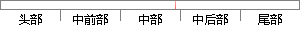

在这三个子模块中：用户可以看到其他用户的基本信息的显示，包括用户头像、用户昵称、用户性别、用户个人介绍和用户所在地区的信息；
片段位置图

相似结果|
相似片段 1：具体的网络相关操作以及编辑相关操作将在后面的模块中进行介绍。5．3．1信息编辑子模块信息编辑模块中主要包括用户信息编辑以及应用信息管理。对用户个人基本信息的编辑包括对昵称、性别、头像、个人简介以及地理位置共享设置信息的设置和保存。
|
※ 片段修改建议 ※
近似词参考：- 显示：表现
- 包括：包罗 包孕 包含 囊括
- 个人：小我 小我私家
- 介绍：先容
- 地区：地域 区域
系统自动生成语句：在这三个子模块中：用户可以看到其他用户的基本信息的表现，包罗用户头像、用户昵称、用户性别、用户小我先容和用户所在地域的信息；
注：本片段修改建议为系统自动生成，仅供参考。